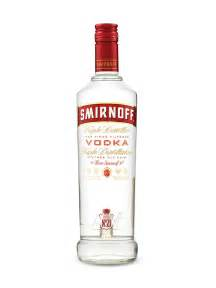

Beverages
One of the most common forms of alcohol called Vodka is made from the potato. Some other beverages include Potato Smoothies. One specific type of smoothie is sweet potato peach smoothie which actually sounds quite decent and healthy.
Potato Dishes
My personal favorite dish would be potato fries covered in cheese and hashbrowns. I personally really enjoy fried foods and so it would make sense for me to like all the fried foods. Also potatoes are pretty good baked and then you add a topping of sour cream and bacon.

Not only are potatoes good for dry dishes, they can also be inserted into salads and soups. The potatoes within the soups the soup the starchiness and creaminess that we know from potatoes.
Potato Snacks

The most common type of potato snack would definite be potato chips. Potato chips can be salty and sweet and anywhere in between. Potatoes also produce some things such as potato crisps.